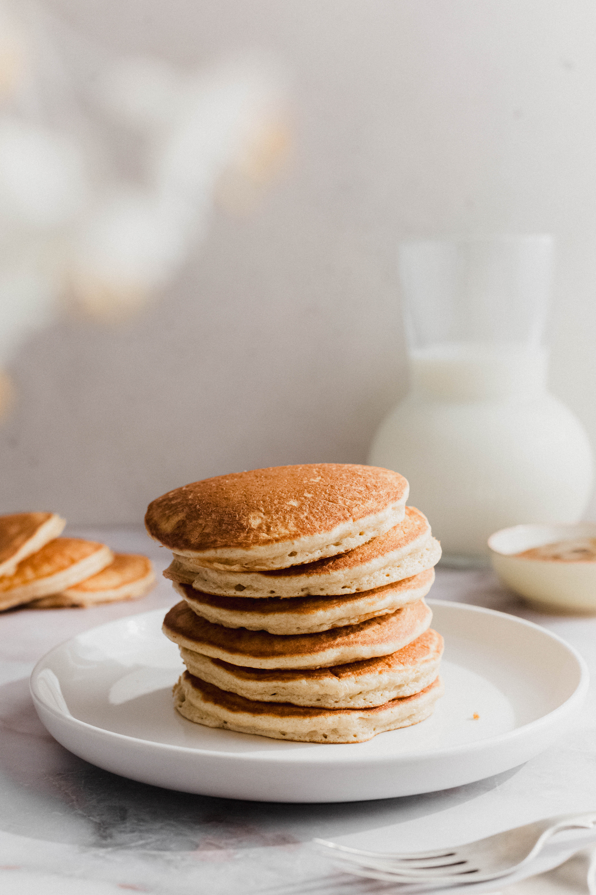

Panqueques de avena

Ingredientes
- 250 gr de harina de avena
- ½ cucharadita de Bicarbonato de Sodio Gourmet
- 1 cucharadita de Polvos de Hornear Gourmet
- 200 ml de yogurt natural
- 200 ml de leche
- 1 cucharadita de Esencia Vainilla Gourmet
- 2 huevos
- 40 gr de mantequilla derretida
Preparación
- Mezclar la harina de avena con el Bicarbonato de Sodio Gourmet, polvos de hornear Gourmet y la azúcar rubia. En otro bol, mezclar el yogurt, leche, esencia de vainilla Gourmet, los huevos y la mantequilla derretida; batir levemente para integrar. Vaciar sobre la mezcla de harina, revolver bien hasta no tener ningún grumo y dejar reposar por 15 minutos.
- Calentar una sartén grande, pincelar con un poquito de mantequilla (o con un pedazo de papel). Poner un cucharón mediano de mezcla por panqueque y cocinar hasta que empiecen a aparecer burbujas por el lado de arriba; dar vuelta y cocinar por el otro lado hasta que estén dorados. Sacar de la sartén y mantener tapados hasta terminar con toda la mezcla, también se pueden recalentar en el horno.
- Servir acompañados de berries y maple syrup o la miel que deseen.